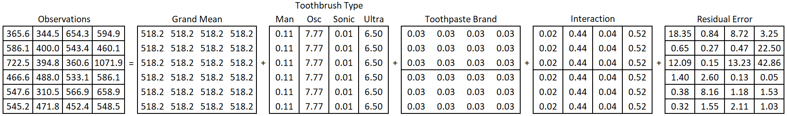

When researchers want to study the effects of two factors on the same response variable a factorial design can be considered. Factorial experiments involve two or more factors that are crossed.
Tip
Full factorial crossing occurs when each combination of factor levels is present in the study.
Compare a factorial design with the one-at-a-time approach. In a one-at-a-time approach, each factor would be investigated in a separate experiment. Each experiment would evaluate the effect of just one factor on the response.
Factorial designs are a way to simultaneously study the effects of multiple factors using just one experiment. Factorial designs have a couple of major advantages over one-factor-at-a-time studies.
They are a more efficient use of our time and material: I can get information about both of my factors from just one observation
They allow the random error to be allocated across a greater number of factors, thereby reducing unexplained variance (i.e. mean square error) and increasing the statistical power of the F-test.
They allow the estimation of interaction effects. Or in other words, we can observe how one factor’s effect on the response changes for different levels of the other factor.
We will expand on the simple toothpaste example to illustrate BF[2] concepts. The study is summarized here.
Researchers wanted to know which of 4 types of toothbrushes was best at reducing plaque: manual (this is the traditional/usual type of brush), oscillating bristles, sonic, and ultrasonic. The response variable was the percent of teeth surface area covered with plaque. Four teeth (first molar in each quadrant of the mouth) were measured on each person to calculate the total percent area covered. Six subjects were assigned to each type of brush.
Researchers also wanted to study the effect of name brand tooth paste compared to its off brand equivalent. This is the second controlled factor in the experiment. It has two levels (name brand and off brand). Twelve subjects used name brand paste, and a different 12 subjects used the off brand. Toothpaste brand is crossed with toothbrush type to create a BF[2].
Factor Structure
Based on the description above, the factor structure for this experiment is displayed in Figure 1:
Figure 1: Factor Structure Diagram
Two levels of toothpaste multiplied by 4 levels of toothbrush results in 8 factor level combinations total. This is represented by the 8 partitions in the interaction factor. These 8 factor level combinations are obtained by overlaying the 2 controlled factor partitions. When the toothbrush factor and toothpastepaste partitions are overlayed, they cross each other and create new, meaningful partitions: the interaction factor. Since there were 24 subjects and the study is balanced, we end up with \(24\div 8 = 3\) replicates in each factor level combination.
Hypothesis and Model
Each factor (i.e. meaningful partition of the data) in Figure 1 corresponds to a term in Equation 1:
\(y_{ijk}\) is the \(k^{th}\) observation from the factor level combination of \(\alpha_i\) and \(\beta_j\).
\(\mu\) is the grand mean of all the observations.
\(\alpha\) is the effect of toothbrush, and \(i\) goes from 1 to 4 since there are 4 toothbrush types
\(\beta\) is the effect of toothpaste, and \(j\) is either 1 or 2 since there are 2 levels (Name brand and off brand).
The \((\alpha\beta)_\text{ij}\) is called the interaction effect.
\(\epsilon\) is the residual error term, and \(k\) is the replicate count within a factor level combination.
There are at least three hypotheses to test with this model. A hypothesis for each main effect, and a hypothesis for the interaction effect.
A hypothesis for the main effect of toothbrush type:
\[H_0: \alpha_\text{i} = 0 \text{ for all } i\]
\[H_a: \alpha_\text{i} \ne 0 \text{ for some } i\]
A hypothesis for the main effect of toothpaste brand:
\[H_0: \beta_\text{j} = 0 \text{ for all } j\]
\[H_a: \beta_\text{j} \ne 0 \text{ for some } j\]
A hypothesis for the interaction of toothbrush and toothpaste.
\[
H_0: (\alpha\beta)_\text{ij} = 0 \text{ for all } ij
\]
\[
H_a: (\alpha\beta)_\text{ij} \ne 0 \text{ for some } ij
\]
When the interaction term is not significant a predicted value for an observation can be obtained by simply adding the grand mean to the main effects \(\hat{\alpha}_i\) and \(\hat{\beta}_j\). This is equivalent to treating the effect of \((\alpha\beta)_\text{ij} = 0\) for all values of \(i\) and \(j\).
When the interaction effect is significant reject the null hypothesis and accept the alternative hypothesis: at least one factor level combination has a none zero effect.
Assumptions
A two-way ANOVA model may be used to analyze data from a BF[2] design if the following requirements are satisfied. Note that these requirements are identical to the requirements of a BF[1] one-way ANOVA.
The BF[] designation refers to the design of the experiment. The reference to one- or two-way ANOVA refers to the analysis technique applied to the resulting data.
Requirements
Method for Checking
What You Hope to See
Constant variance across factor levels
Residual vs. Fitted Plot
No major disparity in vertical spread of point groupings
Levene’s Test
Fail to reject \(H_0\)
Normally Distributed Residuals
Normal Q-Q plot
Straight line, majority of points in boundaries
Independent residuals
Order plot
No pattern/trend
Familiarity with/critical thinking about the experiment
No potential source for bias
Design
In a basic factorial design of 2 factors, two factors are purposely varied in such a way that observations are obtained for every possible factor level combination. Each factor level combination is considered a treatment.
In a completely randomized design, each experimental unit is randomly assigned to exactly 1 factor level combination. It can be helpful to first list out all the subjects, factor level combinations, and the order in a non-randomized table. This can be done by listing all the subjects, then listing the values of each factor in a separate column.
We plan to collect 24 observations in total. Since toothbrush has four levels, it seems reasonable to collect \(24 \div 4 = 6\) observations per toothbrush. We list each toothbrush type 6 times in the toothbrush column. Toothpaste has 2 levels, so we expect \(24 \div 2 = 12\) observations at each level. We list each type of toothpaste 12 times.
When the number of observations to collect is not a multiple of the factor levels, you will need to make decisions about which factor level will receive more/fewer observations.
Note that in this case, all the subjects will be brushing over the same two months. The order column in this case refers to the order in which the researchers will measure the patients. From a practicality perspective, it may not be feasible or meaningful to dictate the order in which experimental units are observed. If order can’t be randomized but could be a potential source of bias, it should at least be tracked so that it can be investigated later on.
In some cases, order (chronological, spatial, etc.) does not make sense to worry about. For example, consider a situation where 3 different tests are administered to subjects. All subjects receive the test at the same time and are asked to turn the test in at the same time. In this case, it does not make sense to think of chronological order. Furthermore, if it does not seem reasonable that their seating arrangement (spatial ordering) would affect results, order could be ignored.
Code
#Create a sequence from 1 to 24#Paste the word "Subject " in front of each id #Subject <-paste("Subject", seq(1:24), sep =" ")#Create a vector with each brush repeated 6 timesbrush <-rep(c("manual", "oscillate", "sonic", "ultrasonic"), each =6)#Create a vector with each paste repeated 12 timespaste <-rep(c("name", "off"), each =12)#Create a vector to represent order of taking measurementorder <-seq(1,24)#Combine the vectors of Subject ID's and controlled factor levels into one tibble/datasetassignment_table <-tibble(Subject, brush, paste, order)#print the table, pander() makes it look nicepander(assignment_table)
Subject
brush
paste
order
Subject 1
manual
name
1
Subject 2
manual
name
2
Subject 3
manual
name
3
Subject 4
manual
name
4
Subject 5
manual
name
5
Subject 6
manual
name
6
Subject 7
oscillate
name
7
Subject 8
oscillate
name
8
Subject 9
oscillate
name
9
Subject 10
oscillate
name
10
Subject 11
oscillate
name
11
Subject 12
oscillate
name
12
Subject 13
sonic
off
13
Subject 14
sonic
off
14
Subject 15
sonic
off
15
Subject 16
sonic
off
16
Subject 17
sonic
off
17
Subject 18
sonic
off
18
Subject 19
ultrasonic
off
19
Subject 20
ultrasonic
off
20
Subject 21
ultrasonic
off
21
Subject 22
ultrasonic
off
22
Subject 23
ultrasonic
off
23
Subject 24
ultrasonic
off
24
Now randomize the brush column, paste column, and the order column.
Code
#Create a sequence from 1 to 24#Paste the word "Subject " in front of each id #Subject <-paste("Subject", seq(1:24), sep =" ")#Create a vector with each brush repeated 6 timesbrush <-rep(c("manual", "oscillate", "sonic", "ultrasonic"), each =6)#Create a vector with each paste repeated 12 timespaste <-rep(c("name", "off"), each =12)#Combine the vectors of Subject ID's and controlled factor levels into one tibble/datasetrandomized_table <-tibble(Subject, sample(brush), sample(paste), sample(order))#print the table, pander() makes it look nicepander(randomized_table)
Subject
sample(brush)
sample(paste)
sample(order)
Subject 1
ultrasonic
off
15
Subject 2
sonic
off
9
Subject 3
manual
name
14
Subject 4
oscillate
off
10
Subject 5
manual
name
24
Subject 6
ultrasonic
name
16
Subject 7
manual
off
7
Subject 8
manual
name
17
Subject 9
oscillate
off
2
Subject 10
oscillate
off
19
Subject 11
sonic
name
20
Subject 12
sonic
name
1
Subject 13
ultrasonic
name
11
Subject 14
manual
off
5
Subject 15
oscillate
off
3
Subject 16
oscillate
off
8
Subject 17
sonic
off
22
Subject 18
sonic
name
18
Subject 19
ultrasonic
name
12
Subject 20
ultrasonic
off
4
Subject 21
sonic
name
21
Subject 22
ultrasonic
name
13
Subject 23
oscillate
off
23
Subject 24
manual
name
6
Interaction Effect
The purpose of this section is to define an interaction, introduce interaction graphs, explain how to interpret interaction graphs to detect interactions, and provide helpful hints in working with interactions.
The terms in Equation 1 that represent the marginal effects of the controlled factors in the experiment are referred to as main effects. In this case \(\alpha\) and \(\beta\) are the main effects for toothbrush and toothpaste respectively.
The factor created by crossing toothbrush and toothpaste is called an interaction factor, and its term in the model, \(\alpha \beta\), is called an interaction effect.
Compared to a BF[1], the novel piece of a BF[2] is the interaction factor. This factor allows us to estimate the interaction effect, which is the effect of belonging to a particular factor level combination. Stated another way, the interaction effect is the additional change in the response (positive or negative) when the two factor levels happen together, beyond the effect of each factor level in isolation.
Tip
When an interaction is present this means that a factor level’s effect on the response depends on the value of another factor.
We will discuss interactions at a conceptual level before dealing with numbers and the arithmetic of calculations. To facilitate this conceptual discussion we will step away from the toothbrush example and use an example for which you have not yet seen any data. We will return to toothbrushes and toothpaste at the end of the conceptual explanation.
Conceptual Understanding
The concept behind an interaction should feel quite familiar. It is something we deal with everyday and is very common in science. You may have experienced an interaction effect in something as simple as your daily commute:
Consider a factor to indicate which route you take to work. Route has two levels: using the main roads and using back roads. The time to reach your destination is the response. During rush hour, the main roads are clogged with traffic and result in a longer commute time than taking the back roads. However, in non-rush hour times, the main roads result in a faster commute time. Thus, the effect of taking main roads depends on whether you are traveling during rush hour or not.
The effect of route was reversed for different levels of rush hour. Not all interactions work this way. Some interactions increase/decrease the magnitude of an effect without completely changing its direction. We can tweak the situation of the commute time example to illustrate this:
During non-rush hour periods, on average back roads result in a commute time that is 5 minutes faster than main roads. During rush hour periods however, the benefit of taking back rounds compared to main roads increases to 15 minutes. Thus, the size of the effect of back roads increased (is amplified) for rush hour compared to non-rush hour.
The above descriptions cover just two possible outcomes for this commute time experiment. It may be helpful to visualize the possible outcome scenarios for this two factor (route and rush hour) study. This can effectively be done with an interaction plot. An interaction plot shows the means for each factor level combination and usually connects the means from the same factor level with a line to help the reader visually group means and detect effects.
Figure 2 shows four possible outcomes of the traffic study where NO interaction is present. The upper left panel of the plot shows a situation where there are no main effects or interactions apparent. The mean is the same regardless of the factor level combination. The upper right panel of the plot shows a large route effect but no effect due to rush hour. This can be seen because the commute time for back roads is high but commute time for main roads is low; however, for a given route there is no difference in the mean for rush hour vs. not rush hour.
The bottom left panel shows a non-zero effect for the rush hour factor, as seen by the sizable difference between the levels of rush hour within a route. However, the flat lines indicate that the mean commute time for route is not changing and therefore route has no effect on commute time. Lastly, the bottom right panel is a situation where both main effects appear to be present - but there is still no interaction apparent.
R code instructions to create interaction plots are at the bottom of the R Instructions>Descriptive Summaries page.
Warning: The `size` argument of `element_rect()` is deprecated as of ggplot2 3.4.0.
ℹ Please use the `linewidth` argument instead.
Figure 2: Scenarios with NO Interaction Present
The line segments within each graph of Figure 2 are parallel (or coincide), which is a visual indicator that no interaction is present.
Tip
Factors with no interaction will have (nearly) parallel line segments in the interaction plot.
So what does an interaction plot look like when there is an interaction present? The key things to notice is that the line segments in the plot are not parallel. Figure 3 contains 3 examples of interaction plots that show the presence of an potential interaction.
Figure 3: Scenarios Indicative of an Interaction
Panel A of Figure 3 illustrates an example where the effect of Route reverses, depending on the value for Rush Hour. In Panel B, the effect of Rush Hour is much greater when using main roads than for back roads. In Panel C, main roads take longer regardless of time of day, but the effect of switching from back roads to main roads is much larger during rush hour than in non-rush hour times.
There are a few key points to remember when working with interactions.
First, exercise caution when interpreting a main effect if an interaction is present. The definition of an interaction is that a factor level’s effect changes for different values of the other factor. Therefore, it does not make sense to interpret the hypothesis test of a controlled factor if it is part of a significant interaction. Instead, get in the habit of describing the nature of the interaction.
To illustrate the danger of interpreting main effect hypothesis tests when the interaction is significant consider Panel A of Figure 3. If the hypothesis test for Route had a large p-value, it is tempting to say there is insufficient evidence that Route has an effect on commute time. However, the interaction plot shows quite the opposite. Route has an important effect on the response, since the level of Route drastically changes the impact of Rush Hour on commute times. Even though the mean commute time for “back” and “main” may be similar in this scenario, Route is indirectly having an effect on commute time through its interaction with Rush Hour.
Conversely, imagine a scenario where Route’s main effect had a small p-value and the Route - Rush Hour interaction was also significant. If the interaction is like that depicted in Panel C of Figure 3, simply stating that Route is a significant factor does not tell the whole story. The effect of Route in during rush hour is large and may be significant (steep blue line), but the effect of Route in non-rush hour times may not be large enough to reach significance (the nearly flat red line).
Interpreting Main Effects and Interactions
When a significant interaction is present, do not interpret the hypothesis tests of its main effects without providing additional information.
Second, don’t rely on interaction plots alone to detect the presence/absence of interactions. Though interaction plots are a a helpful tool, they do not adequately show the repsonse variability in each factor level combination. In other words, even when line segments are not parallel a hypothesis test is still needed to determine if an interaction is real or just due to random error. Furthermore, two lines may look nearly parallel but could actually represent a significant interaction.
Lastly, beware of a common mistake that students make. Students commonly state an interaction means that the level of one factor affects the values of another factor. This is a lie from Satan! The key misunderstanding here is thinking that the value of one factor affects the other factor. In reality, it is the factor’s effect on the response that changes for different levels of the other factor. The two factors do not affect each other.
Decomposition
So far, we have been discussing the concept of interaction without doing any calculation or using specific numbers. Let’s return to our BF[2] experiment using toothbrush type and toothpaste brand as independent factors, and percent plaque coverage as the response. We will use this data to show how to calculate interaction effects, as well as main effects.
We will then continue on to complete the decomposition of variance and preform an F-test.
As was just mentioned, there are 2 controlled factors: toothbrush type (4 levels) and toothpaste brand (2 levels). A third factor, the interaction, is obtained by crossing the two controlled factors. In terms of the factor diagram, factors are crossed by overlaying the partition lines for the two factors to create new partitions that are also meaningful (see Factor Structure for a review). Figure 4 shows the 3 structural factors for a BF[2].
Figure 4: Three structural factors
To get a full structure diagram, as shown in Figure 5 we must also include the universal factors for the grand mean and residuals.
Figure 5: Factor structure diagram
Each factor in the diagram corresponds to a term in Equation 2:
\(\alpha\) is the effect of toothbrush, and \(i\) goes from 1 to 4 since there are 4 toothbrush types
\(\beta\) is the effect of toothpaste, and \(j\) is either 1 or 2 since there are 2 levels (Name brand and off brand).
The \((\alpha\beta)_\text{ij}\) is called the interaction effect.
\(\epsilon\) is the residual error term, and \(k\) is the replicate count within a factor level combination.
On the left side of the equation is \(y_{ijk}\), which represents the \(k^{th}\) observation from the factor level combination of \(\alpha_i\) and \(\beta_j\).
A decomposition of the data is how we estimate these model parameters.
Balanced vs. Unbalanced Data
The formulas and decomposition presented here are for balanced data, where the number of replicates at each factor level combination is the same. In the case of unbalanced data with interaction effects, decisions must be made about how to allocate sums of squares. How to deal with this situation, including R code, is explained in the Unbalanced page under Broad Topics.
Factor Effects
How can an interaction affect be estimated? Like all factor effects, its estimate is calculated using the general rule.
General Rule for Calculating Factor Level Effect
Factor level effect = mean of the factor level - Sum(effects of all outside factors)
From the general rule we can see that before we estimate the interaction effect we first need to estimate the outside factor effects (i.e. main effects). Factor level means need to be calculated in order to calculate estimated effects.
It is also important to recall that the grand mean factor is outside of all other factors, while the residual error factor is inside of all other factors.
Factor Level Means
Figure 6 shows our data set with partition lines for structural factors in place. We will now proceed to calculate the factor level means for each factor.
Figure 6: Full data set with partitions
The grand mean is the mean of all the observations:
There are 8 different combinations of toothbrush type and toothpaste, so the interaction factor has 8 levels total. We calculate a mean for each one, but will only show the calculation for the first 3.
\[
\bar{y}_\text{manual and name brand} = \bar{y}_{11\cdot} = \frac{19.12 + 24.21 + 26.88}{3} = 23.40
\]
\[
\bar{y}_\text{manual and off brand} = \bar{y}_{12\cdot} = \frac{21.60 + 23.40 + 23.35}{3} = 22.78
\]
\[
\bar{y}_\text{oscillating and name brand} = \bar{y}_{21\cdot} = \frac{18.56 + 20.00 + 19.87}{3} = 19.48
\]
The means for the residual error factor levels is the observed value itself since there is just 1 observation per level. Therefore, there are no calculations to show.
Figure 7 displays all the factor level means inside the factor structure.
Figure 7: Factor level means
Factor Level Effects
Grand mean effect
Now that we have calculated means for each level of each factor, we can move on to calculate the effects of the factor levels.1
For the grand mean, there is only one level and there are no outside factors. Therefore, the effect due to grand mean is 22.76 (equivalent to its mean) and this affect is applied to all 24 observations.
Toothbrush effects
The toothbrush factor has four levels: one for each brush type. We will use the general rule for calculating factor level effects. To calculate the effect of a toothbrush, take the toothbrush mean and subtract it from the grand mean factor’s effect. For the manual brush, this looks like:
\[
23.09 - 22.76 = 0.33
\]
Using the manual brush has the effect of increasing a person’s plaque area percentage by 0.33 percentage points on average compared to the grand mean. In a similar way2 you can find the effect for the oscillating brush \(19.98 - 22.76 = -2.79\). This means the amount of plaque decreased by 2.79 on average with this brush compared to the grand mean. For a sonic toothbrush, the effect is \(22.68 - 22.76 = -0.09\). For an ultrasonic brush the effect is \(25.31 - 22.76 = 2.55\).
It is interesting to note that the factor effects for brush type are the same, whether toothpaste brand is included in the analysis or not.
Toothpaste effects
Calculating the effects for the second controlled factor in the experiment follows a similar pattern and also uses the general rule for calculating effect sizes. Remember that toothbrush is not outside or inside of toothpaste, rather the two factors are crossed. To calculate the effect of using the name brand toothpaste, take the name brand mean and subtract it from the grand mean factor’s effect:
\[
22.93 - 22.76 = 0.16
\]
A similar calculation is performed for off the brand toothpaste.
\[
22.60 - 22.76 = -0.16
\]
With only two levels, it becomes obvious that the effects of a factor’s levels will always sum to zero. You may want to go back to the toothbrush level effects and verify this is true.
Interaction effects
The general rule says that effects of outside factors must be subtracted from the factor level mean. We pause to review the relationship of the other factors to the interaction factor to determine if they are inside, outside, or crossed with each other.
(a) Interaction inside of brush
(b) Interaction inside of toothpaste
Figure 8: Interaction Effects
In Figure 8 (a) you can see that each level of the interaction will fit nicely within a level of toothbrush, this means toothbrush is outside of interaction (equivalently, interaction is inside of toothbrush). The same holds true for the relationship of toothpaste brand and interaction, as shown in Figure 8 (b).
Therefore, to calculate the interaction effect for using an ultrasonic brush with name brand toothpaste we will subtract the effects of the grand mean factor, ultrasonic brush, and name brand paste from the “ultrasonic, name brand” level mean.
\[
26.19 - (22.76 + 2.55 + 0.16) = .15
\]
Let’s take a deeper look to understand why this works. It can be helpful to remember our assembly line analogy. We will walk through this assembly line, showing a graph to illustrate how the effects are added at each station.
An observation from the “ultrasonic brush, name brand paste” group starts with the grand mean value of 22.76. The observation belongs to the ultrasonic group, where plaque tends to be higher, specifically 2.55 higher on average (2.55 is the effect of ultrasonic). Figure 9 show the starting point of the grand mean and the addition of the brush effect.
Figure 9: Grand mean + brush effect
At the next step, because the observation belongs to the Name Brand Toothpaste group we would tack on an additional 0.16 of plaque coverage, as shown in Figure 10.
Figure 10: Grand mean + brush effect + paste effect
What we haven’t accounted for yet is the fact that the ultrasonic brush and name brand toothpaste have appeared together. If the interaction is significant then we can expect a synergistic effect (in either direction) and will need to add/subtract more to the response. Otherwise, the interaction effects will be small (relative to the error variance).
There is an old saying, “the whole is greater than the sum of its parts”. In a way, the interaction effect is the measure of how much greater. Figure 11 shows that after summing the main effects of each controlled factor, the remaining distance to the mean of the factor level combination is the interaction effect. We calculated this above using the general rule and found the distance to be 0.15.
Figure 11: Interaction effect is remaining distance to factor level mean
The previous 3 figures are placed side by side below in the figure below so that the additive progression of the effects can more easily be seen.
(a) ?(caption)
(b) ?(caption)
(c) ?(caption)
Figure 12: Additive Effects
Additive Effects
Lastly, the residuals (or residual effects) need to be calculated. The mean for each level of residual is simply the observation itself. Effects associated with that observation’s factor levels are subtracted from the observed value. Whatever is left over is considered the residual. In other words, we have applied the general rule for calculating effect size. For the residual factor, the effect can concisely be stated as “observed value - predicted value”.
As an example, the residual in the top left corner of the residual factor was obtained with this calculation:
All other residuals were similarly obtained. Ultimately, Figure 13 displays all the factor level effects that are summed to obtain each observation.
Figure 13: Factor level effects
Degrees of Freedom
We can use our understanding of inside vs. outside factors to determine the degrees of freedom (df) for the grand mean, treatment factors, interaction and residual errors. We start with 24 observations - or pieces of information. In other words, we have 24 degrees of freedom that need to be allocated to the factors.
General Rule for Degrees of Freedom
df\(_\text{factor}\) = Total levels of a factor minus the sum of the df of all outside factors
An alternative way to find degrees of freedom is to count the number of unique pieces of information in a factor.
In the toothbrush and toothpaste example, grand mean has one level and there are no factors outside of grand mean. Therefore, its degrees of freedom equals one. This will always be the case.
Remember, the degrees of freedom represent the number of unique pieces of information contributing to the estimation of the effects for that factor. In this case, as soon as you estimate the grand mean for just one of the observations, you know it for all the observations. In other words, only 1 value was free to vary. As soon as it was known all the other values for the grand mean effect were also known. Therefore, there is just one unique piece of information in the grand mean factor. Grand mean has just 1 degree of freedom.
In this case there are two controlled factors, or treatment factors: toothbrush and toothpaste. For toothbrush there are four levels of the factor. Grand mean is the only factor outside of toothbrush. Take the number of levels for toothbrush (4) and subtract the degrees of freedom for grand mean (1), which yields 4-1 = 3 degrees of freedom.
The degrees of freedom for toothbrush is it the same here as it was for the BF[1].
We could just as easily have used the other approach to finding the degrees of freedom: counting the unique pieces of information. Upon examining the factor for toothbrush in Figure 13 you can see there are 4 unique numbers. We know the effects for toothbrush must sum to zero, so the 4th effect is not free to vary. As soon as I know the effect for 3 of the brushes, I can fill in all the effects for the toothbrush factor.
A similar approach is taken for toothpaste. Here it is even more obvious that the effects for toothpaste sum to zero. After estimating the toothbrush effect for one observation, I can fill in the toothpaste effects for all the other observations. Therefore, the degrees of freedom for toothpaste is 1.
Using the general rule, I know there are 2 levels for toothpaste and grand mean is the only outside factor. Since grand mean has 1 degree of freedom, I get \(2-1 = 1\) degree of freedom for toothpaste.
Now we must calculate degrees of freedom for the interaction term. Take a closer look at the interaction effects in Figure 13. You can see that the numbers repeat within each cell. There are 8 cells total. You can also see that the effects inside a column of values sum to zero, as do the values in a row. Therefore, I really only need to know a value in 3 of the cells of the interaction factor before I can fill in the effects for all the other cells in that factor.
This is in perfect harmony with an application of the general rule. The interaction factor has 8 factor levels. Factors outside of the interaction include: grand mean (1 df), toothbrush (3 df), and toothpaste (1 df). Applying the general rule with these values yields \(8 - (1 + 3 + 1) = 3\) degrees of freedom for the interaction factor.
Perhaps the easiest way to find the degrees of freedom for an interaction that is created by crossing two other factors is to multiply the degrees of freedom of the two other factors. In this case, toothbrush and toothpaste are crossed, so you would get \(3*1 = 3\), which matches the answer found using other methods.
Finally, the residual degrees of freedom can be found using the general rule. Since the residual error factor is inside of all other factors, this is the same as finding how many degrees of freedom are leftover after calculating degrees of freedom for all other factors. In this example, there were 24 observations total, so we subtract the degrees of freedom for the other factors from 24. This returns \(24 - (1+3+1+3) = 16\) degrees of freedom for residuals.
The other approach to finding the degrees of freedom for residuals is to group the residuals by the smallest structural factor partitions (in this case the interaction). Inside each of those partitions the residuals sum to zero. For example, applying the interaction partition to residuals gives the values \(-4.28\), \(0.81\), and \(3.48\). Since we know the 3 residuals sum to zero in each partition, we only need to know 2 values per partition in order to fill in the third residual effect. With 8 partitions applied to the residuals, we have \(2x8 = 16\) degrees of freedom for residual error.
Completing the ANOVA Table
Now that we have calculated degrees of freedom and effects for each factor , we can calculate the remaining pieces of the ANOVA table: Sum of Squares (SS), Mean Squares (MS), F-statistic and p-value. A completed ANOVA summary table contains the information we need for a hypothesis test of the main effects (for controlled factors) and their interaction.
In an ANOVA table, each factor and their associated degrees of freedom are listed on the left. Note: the total degrees of freedom are the total number of observations.
Source
df
SS
MS
Fvalue
pvalue
Grand Mean
1
Brush
3
Toothpaste
1
Brush:Toothpaste
3
Residual Error
16
Total
24
To get the sum of squares (SS) of a factor, each value displayed in that particular factor first needs to be squared. Figure 13 shows the effects, while Figure 14 shows the squared effects.

Figure 14: Squared factor level effects
Then, for each factor, all the squared values are summed up to get the sum of squares. The total sum of squares is obtained by summing the squared observations as shown in Equation 3. This represents the total variability in the dataset that will then be allocated or partitioned to the various factors, starting with the grand mean.
The rounded numbers are displayed throughout this section, but all calculations are done using the unrounded numbers.
The toothbrush factor has four different effects: one for each level of the factor. For each effect, the squared value is multiplied by the number of observations within the level of the factor. Then, the results are added across all levels to get the sum of squares due to toothbrush.
You can check that the sums of squares (SS) has been allocated to the factors correctly by adding up the SS for each factor and verifying that it also equals the result found in Equation 3.
Putting this information into the ANOVA table gets us the result shown in Table 1.
Table 1: Sums of squares
Source
df
SS
MS
Fvalue
pvalue
Grand Mean
1
12437.43
Brush
3
86.31
Toothpaste
1
0.62
Brush:Toothpaste
3
6.12
Residual Error
16
143.82
Total
24
12674.30
Recall that SS is a measure of total variability. Of the three structural factors (brush, toothpaste, and their interaction) it is clear to see that brush is contributing the most variability. Some of the difference in SS may be due to difference in number of levels for each factor. Adding levels to a factor allows more variability to be attributed to that factor. We will convert this total variability (sum of squares) into a mean variability (mean square) measure to properly account for differences in number of factor levels. This allows us to compare the factors’ variability on a standardized scale.
To calculate a mean square (MS), simply divide SS by degrees of freedom for a factor. The mean square calculations are:
For each structural factor in the design there are a set of hypothesis we want to test using the F statistic.
Specifically, we will want to test whether toothbrush type has an effect on plaque coverage, whether toothpaste brand has an effect on plaque coverage, and whether the interaction between brush and paste has an effect on plaque coverage.
More specifically, for each factor we test whether the factor level effects are all equal to zero. We can express the hypotheses mathematically using the terms of Equation 2.
A hypothesis for the main effect of toothbrush type:
\[H_0: \alpha_\text{i} = 0 \text{ for all } i\]
\[H_a: \alpha_\text{i} \ne 0 \text{ for some } i\]
A hypothesis for the main effect of toothpaste brand:
\[H_0: \beta_\text{j} = 0 \text{ for all } j\]
\[H_a: \beta_\text{j} \ne 0 \text{ for some } j\]
A hypothesis for the interaction of toothbrush and toothpaste.
\[
H_0: (\alpha\beta)_\text{ij} = 0 \text{ for all } ij
\]
\[
H_a: (\alpha\beta)_\text{ij} \ne 0 \text{ for some } ij
\]
To test these hypotheses we need to compare the mean square (MS) for a factor to the mean square for residual error (abbreviated as MSE). The MSE is the estimate of unexplained, random error. If a factor’s MS is similar in size to the MSE, the variance in that factor may just be random error; and the effect of the factor levels are zero. On the other hand, if the variability in the factor, as measured by its MS, is much larger than the random error observed in the experiment (represented by MSE), then it is reasonable to believe the factor levels have a non-trivial contribution to the variability. In other words, the factor has a significant effect on the response.
The F statistic is a ratio of these two errors and is obtained by dividing the factor’s mean square (MS) by the MSE. The F statistic calculations are
\(F_\text{brush} = 28.77/8.99 = 3.20\)
\(F_\text{toothpaste} = 0.62/8.99 = 0.07\)
\(F_\text{brush:toothpaste} = 2.04 / 8.99 = .23\)
This F statistic follows a well defined distribution, called the F distribution. The F distribution is defined by two values for degrees of freedom3:
the numerator degrees of freedom, which is the degrees of freedom for the factor being tested
the denominator degrees of freedom, which is the degrees of freedom for residual error
The area under this distribution curve to the right of our F statistic is called the p-value. The p-value represents the probability of getting an F statistic at least as large as the one obtained, assuming the null hypothesis (of no effect) is true.
The F statistic, numerator degrees of freedom, and denominator degrees of freedom are the 3 required inputs to calculate a p-value. P-values can be obtained manually using the applet mentioned above, the f.dist.rt()4 function in excel or the pf() function in R5. Usually though, R will show p-values as part of the standard output of the ANOVA model/table and it is recommended you stick to those values when reporting answers.
The completed ANOVA table for this BF[2] toothbrush and toothpaste example is shown in
Source
df
SS
MS
Fvalue
pvalue
Grand Mean
1
12437.43
12437.43
Brush
3
86.31
28.77
3.20
0.051
Toothpaste
1
0.62
0.62
0.07
0.800
Brush:Toothpaste
3
6.12
2.04
0.23
0.876
Residual Error
16
143.82
8.99
Total
24
12674.30
Because the p-value for the interaction (p-value = 0.876) is much higher than any traditional level of significance threshold we might have chosen (0.01, 0.05, or 0.1), we fail to reject the null hypothesis. There is insufficient evidence to say the interaction effect has an effect on plaque coverage. Because the interaction is NOT significant, we can proceed to interpret the main effects test results.
Significant Interaction Effects
If the interaction effect is significant, great caution should be taken when interpreting the hypothesis test results for the factors involved in the interaction; it may not be valid to interpret the hypothesis test results. Instead, if the interaction is significant, it is better to describe the nature of the interaction with graphs, numbers, and words.
Toothpaste’s p-value is high (p-value = 0.8), indicating no evidence that toothpaste brand has an effect on plaque coverage. The p-value for brush is marginally significant (p-value = 0.051). When (in)significance is borderline, rather than making bold statements based on a small amount of (in)significance, it is helpful to dig a little deeper. Consider things like sample size, effect size (practical significance), outliers, and how closely assumptions are met. After weighing those considerations carefully, take a stance and state your belief about the role of the factor on the response. Explain your rationale, then keep an open mind and stay curious.
Analysis in R
We will illustrate the R code used for a BF[2] analysis while continuing to use the toothbrush and toothpaste example that has been used throughout this page.
Describe the Data
When working with a dataset the first thing to do is get to know your data through numerical and graphical summaries. Numerical summaries typically consist of means, standard deviations, and sample sizes for each factor level. Graphical summaries most usually are boxplots, scatterplots, and/or interaction plots with the means displayed.
Interactive code and additional explanations of numerical summaries and plots in R are found at R Instructions->Descriptive Summaries section of the book.
Numerical Summaries
After loading required packages, we will read in the data and do some wrangling.
Code
bf2 <-read_csv("data/toothpaste_BF2.csv")
We then calculate summary statistics for each factor level separately.
Code
#Descriptive stats for levels of Brushfavstats(Plaque~Brush, data = bf2) |>kable(digits =2) |>kable_styling(full_width =TRUE)#Descriptive stats for levels of Toothpastefavstats(Plaque~Toothpaste, data = bf2) |>kable(digits =2) |>kable_styling(full_width =TRUE)
Table 2: Numerical Summary for Each Factor
(a) Brush
Brush
min
Q1
median
Q3
max
mean
sd
n
missing
Manual
19.12
22.04
23.38
24.01
26.88
23.09
2.60
6
0
Oscillating
17.62
18.89
19.94
21.29
22.09
19.98
1.74
6
0
Sonic
18.99
21.73
23.20
23.68
25.58
22.67
2.27
6
0
Ultrasonic
21.45
23.62
24.30
25.35
32.74
25.31
3.90
6
0
(b) Toothpaste
Toothpaste
min
Q1
median
Q3
max
mean
sd
n
missing
NameBrand
18.56
19.68
22.38
24.69
32.74
22.92
4.18
12
0
OffBrand
17.62
21.69
23.22
23.52
25.67
22.60
2.00
12
0
In Table 2 (a) we see that the oscillating brush has lowest mean plaque (19.98). Table 2 (b) shows the mean plaque for the two types of toothpaste is very close, 22.92 for Name Brand and 22.60 for Off Brand.
You can also look at descriptive statistics for factor level combinations. This is only advisable if there is sufficient sample size at each combination and the number of combinations is manageable. Table 3 shows what that looks like for our current example. Due to the many combinations, it is a bit difficult to interpret the output. Furthermore, using a 5 number summary on a sample size of 3 observations is not advisable so some of the summary statistics have been dropped.
The combination of Oscillating with Name Brand has the lowest mean (19.48) and the lowest standard deviation (0.80).
Graphs are also valuable tools to help you get to know your data. Since there are only 3 observation in each factor level combination, a dotplot/scatterplot is more appropriate than a boxplot. This is shown in Figure 15
Code
#Note, I have to turn Brush into a factor because it started out as a character variabledotplot(Plaque~factor(Brush)|factor(Toothpaste), data = bf2, xlab ="")
Figure 15: Graphical Summary
You could also gain insight about the main effects by cutting the data by each factor separately, as shown in Figure 16.
(a) Brush
(b) Toothpaste
Figure 16: Data cut by one factor at a time
Finally, an interaction plot is ideal for investigating a BF[2]. The plot only shows factor level means. Therefore, it does not give a good sense of the underlying distribution of data and should not be used as the only visual assessment of your data. However, it is extremely good at providing insight into possible interactions.
In Figure 17 the lines are not parallel. In fact, they cross twice. Though this seems to suggest an interaction is present, our ability to claim an interaction exists will depend on the results of a hypothesis test. The hypothesis test is greatly influenced by sample size and the variability at each of the factor level means presented in the plot.
Figure 17: Interaction plot for Brush vs. Toothpaste
Create the Model
You then create the model using the aov() function. To see results of the F-test you can feed your model into a summary() or anova() function.
summary() and anova() functions give the same output with some slight differences in formatting when called on a model created with aov(). The summary() function is more general; it can also take linear regression models created with 'lm() as inputs. The output provided by summary() will change based on the type of object it is called on. This is discussed in more detail at the bottom of the Unbalanced page.
myaov is the user defined name in which the results of the aov() model are stored
Y is the name of a numeric variable in your dataset which represents the quantitative response variable.
X1 and X2 are names of qualitative variables in your dataset. They should have class(X) equal to factor or character. If that is not the case, use factor(X) inside the aov(Y ~ factor(X1)*...) command.
YourDataSet is the name of your data set.
The * in the code above is a shortcut for writing out the whole model. It can be read as, “include each term by itself, and all possible interaction terms”. The long way of writing out the model uses a colon, :, to define interaction terms and is shown below. When writing it this way each term must be explicitly stated.
Below are the results for the full BF[2] model using the toothbrush and toothpaste example. You should notice that these results match what we got when we performed the decomposition manually to build the ANOVA summary table. Even though the interaction plot showed crossing lines, we see the interaction between Brush and Toothpaste is not significant (p-value = .8763). This means we can interpret the hypothesis tests for each of the main effects.
Toothpaste is not significant (p-value = .7966) and Brush is marginally significant (p-value = .0517, which is close to the traditional alpha level of 0.05). Our exploratory analysis showed that oscillating brush resulted in the lowest amount of plaque and the ultrasonic brush resulted in the highest plaque measure.
In order to trust these hypothesis test results we need to verify that the assumptions are met.
Check Assumptions
For a more detailed explanation of the code, output, and theory behind these assumptions visit the Assumptions page.
Constant Variance of Residuals
There needs to be constant variance of residuals across the factor level combinations. First, we can check the residual plot.
Code
plot(bf2_aov, which =1)
Figure 18: Checking constant variance
In Figure 18 there are 8 distinct vertical groupings of points, one for each factor level combination. There are 3 observations, and so 3 residuals also, for each factor level combination. There does seem to be a slight trend for points with larger predicted values to be more spread out. On the far left of the plot the points appear closer together, as you move to the right the points tend to be more spread out (thought not always). This phenomenon raises the concern that the assumption of constant variance across factor level combinations may be violated.
Levene’s test can provide insight on whether the trend in the residual plot is drastic enough to constitute a violation of the constant variance assumption.
Recall that the null hypothesis for Levene’s test is that the variance of residuals is equal for each and every factor level combination. The results of the test below shows a p-value of 0.5409. We therefore fail to reject a null hypothesis of equal variances and proceed with the analysis (assuming the other assumptions are met).
Code
leveneTest(bf2_aov) %>%kable(digits =2)
Df
F value
Pr(>F)
group
7
0.88
0.54
16
Normally Distributed Residuals
We check the assumption that residuals are normally distributed in Figure 19. Most of the points are in the shaded region. Row 1 of the dataset appears in the upper right corner, far away from the boundaries. A couple of other points are very close, but just outside of the boundary. Due to the robust nature of ANOVA, the mild violation of this assumption is not a concern.
Code
car::qqPlot(bf2_aov$residuals, id =FALSE)
Figure 19: Checking normality of residuals
Independent Residuals
The dataset we are analyzing does not include information about the order in which the data was collected. In fact, it may be possible there were multiple teams of researchers collecting the data simultaneously and there is no specific order. From what we know, there is no reason to think there is a potential order bias. Nevertheless, the order plot in Figure 20 can be used to investigate trends in residuals by row number in the dataset. This plot does not show any patterns or trends. The assumption of independent residuals seems to be satisfied.
The assumptions appear to be met, meaning the p-values should be valid and reliable. However, since the F-test for toothbrush is such a close call, mild-moderate assumption violations may cause the p-value of the test to be slightly off. Even after attempting various transformations of the response variable, Plaque, the degree to which assumptions are met does not improve (in fact, in some cases it gets worse).
Rather than fuss about the whether F-test assumptions are met or not, you can recognize the F-test for Brush is close enough to merit further investigation. In this case, it is recommended to proceed with contrasts/pairwise tests of toothbrush type which do not require constant variance. (You should be aware of what assumption are required for those tests and be sure to check them).
In the above output results for all pairwise comparisons with Tukey’s HSD adjustment for multiple comparisons are displayed. Only the Ultrasonic-Oscillating comparison is significantly different, with a p-value of .03. Therefore, we can state that the ultrasonic brush performs significantly worse than the oscillating brush at plaque reduction.
Appendix
Notation for Estimated Effects
Here are symbolic representations for the estimated effects in the BF[2] model, as shown in Equation 1.
What can be done in the case of an experiment where there is only one observation per factor level combination?
Under construction.
Footnotes
There are symbolic/mathematical representations of the factor effect formulas located in the appendix.↩︎
The values used in calculations here and throughout this page are rounded for a cleaner display. However, you should use unrounded values for these calculations. Rounded values and significant digits is the reason the arithmetic in some of these calculations appears off by one one-hundredth.↩︎
You can explore behavior of the F distribution for various combinations of degrees of freedom using this applet↩︎
This is the formula used in Excel to obtain the p-values for brush, toothpaste, and brush:toothpaste interaction respectively: